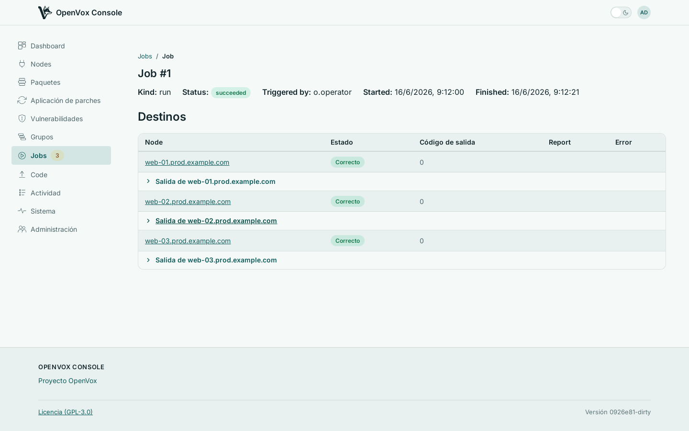

Usar
Ejecutar Jobs
Ejecute Puppet o un Task de Puppet bajo demanda en un Node, una selección, los Nodes con los que coincide una consulta o un grupo de Nodes, y vea qué hizo cada Node.
La consola puede ejecutar Puppet en los Nodes ahora mismo, en lugar de en su siguiente ejecución programada, y ejecutar los Tasks de Puppet que contiene su código desplegado. Cada petición es un Job, registrado con cada Node al que se dirigió y lo que ocurrió en cada uno.
Iniciar un Job requiere orchestrator:run; ver los Jobs requiere orchestrator:read. Un Node debe estar conectado para poder alcanzarlo: consulte Añadir Nodes.
Si su rol está concedido sobre grupos de Nodes concretos, solo puede iniciar Jobs en Nodes de esos grupos, y solo ve sus Jobs. Un Job que nombra un Node fuera de ellos se rechaza entero (tampoco se ejecuta nada en los demás Nodes), y la consola indica qué Nodes hay que quitar. Consulte Usuarios, roles y tokens.
Para llevar a cabo varias ejecuciones y Tasks en orden, consulte Ejecutar Plans. Para iniciar un Job más tarde, o de forma repetida, consulte Programar Jobs.
Ejecutar Puppet
Desde donde esté viendo los Nodes que quiere:
- Un Node: en la página del Node, ejecute Puppet.
- Una selección: en la página Nodes, seleccione Nodes y ejecute Puppet sobre la selección.
- Todos los Nodes con los que coincide un grupo: en la página del grupo, ejecute Puppet sobre sus Nodes coincidentes.
Cada una abre un diálogo que indica los Nodes. Confírmelo para iniciar un Job, al que se le lleva a continuación.
O empiece desde la página Jobs, donde Ejecutar Puppet y Ejecutar Task le permiten indicar qué Nodes: consulte Elegir los Nodes.
Opciones de ejecución
El diálogo ofrece tres opciones. Si no se elige ninguna, la ejecución es una ejecución normal.
- No-op informa de lo que cambiaría la ejecución y no cambia nada. El Job muestra la lista de cada Node.
- Salida de depuración registra en el Job el log de depuración de Puppet de cada Node.
- Environment pide al Node que se ejecute contra ese Environment, para probar un Node con una rama.
El Environment es una petición, no una imposición. Cuando los grupos de Nodes de un Node definen un Environment, Puppet usa ese, pida lo que pida la ejecución. El Job marca cada Node que se ejecutó en un Environment distinto del solicitado, una vez que llega el Report del Node.
Una ejecución con opciones registra lo que imprimió Puppet. Abra Salida bajo la línea de un Node en el Job para leerlo. La salida larga se corta a los 256 KB, y lo indica.
Las opciones de ejecución necesitan un cliente del agente de Node de esta versión de la consola o posterior. Un cliente más antiguo rechaza la petición, y la línea del Node falla indicando que el cliente es demasiado antiguo. En ese Node no se ejecuta Puppet en absoluto, así que una petición no-op nunca se lleva a cabo como una ejecución real. Actualice el cliente (consulte Mantener al día los agentes de Node) y vuelva a ejecutar. Una ejecución sin opciones funciona con cualquier versión del cliente.
A través de la API, con un token de acceso:
curl -X POST https://console.example.com/api/v1/orchestrator/runs \
-H "Authorization: Bearer <access token>" \
-H 'Content-Type: application/json' \
-d '{"targets":["web01.example.com","web02.example.com"]}'
Añada options para una ejecución con opciones. Cualquiera de las tres puede omitirse:
-d '{"targets":["web01.example.com"],
"options":{"noop":true,"environment":"feature_x","debug":true}}'
La petición se rechaza, y no se crea ningún Job, si el nombre del Environment no es válido, si openvoxserver no tiene ese Environment o si nombra una opción que la consola no conoce.
Elegir los Nodes
Ejecutar Puppet y Ejecutar Task, en la página Jobs, preguntan en qué Nodes ejecutar, de una de estas tres formas:
-
Lista de Nodes: certnames, uno por línea.
-
Consulta: una consulta PQL que devuelve
certname. La consola la ejecuta contra openvoxdb cuando arranca el Job, y el Job se ejecuta en los Nodes que devuelve:inventory[certname] { facts.os.family = "Debian" and facts.os.release.major = "12" } -
Grupo de Nodes: los Nodes que hay en el grupo cuando arranca el Job.
Vista previa de Nodes muestra los Nodes que implica su elección en este momento. El diálogo siempre se los muestra antes de iniciar nada: elegir Ejecutar la primera vez ejecuta la vista previa, y la segunda inicia el Job. Una consulta o un grupo que no coincide con ningún Node no inicia nada.
Una consulta debe estar en la sintaxis propia de PQL y devolver certname. Una consulta que la consola u openvoxdb no pueden usar se rechaza con el motivo, que en el caso de un error de sintaxis es el propio mensaje de openvoxdb señalando el error.
Si su rol está concedido sobre grupos de Nodes concretos, una consulta o un grupo le da los Nodes coincidentes que están en sus grupos, y no dice nada de los demás. Su consulta tampoco puede contener una subconsulta (las llaves de una entidad dentro de las de otra), porque una consulta así podría servir para averiguar cosas sobre Nodes que usted no puede ver. Consulte una sola entidad, como en el ejemplo anterior; inventory alcanza todos los Facts y trusted facts de un Node. Los Nodes que nombre en una lista siguen siendo todo o nada.
A través de la API, indique query o group (el ID de un grupo de Nodes) en lugar de targets:
curl -X POST https://console.example.com/api/v1/orchestrator/runs \
-H "Authorization: Bearer <access token>" \
-H 'Content-Type: application/json' \
-d '{"query":"inventory[certname] { facts.os.family = \"Debian\" }",
"options":{"noop":true}}'
POST /api/v1/orchestrator/targets/resolve acepta los mismos targets, query o group y responde con los Nodes, sin iniciar nada.
Ejecutar un Task
Un Task es un script incluido en el directorio tasks de un módulo, con un archivo de metadatos que describe sus parámetros. La consola ejecuta los que hay en el código que ha desplegado (consulte Desplegar código), así que no hay que instalar nada para un Task aparte de desplegar el módulo que lo contiene.
Los Tasks se ofrecen en los mismos lugares que las ejecuciones de Puppet: Ejecutar Task en la página de un Node, sobre la selección de la página Nodes, sobre los Nodes coincidentes de un grupo y en la página Jobs. En el diálogo:
- Elija el Environment del que tomar el Task. Los Tasks se leen del código de ese Environment tal como está desplegado en este momento.
- Elija el Task. Debajo aparecen su descripción y un campo por cada parámetro. Un campo marcado con
*es obligatorio; uno que se deje vacío recibe el valor por defecto que declaran sus metadatos. - Opcionalmente, defina un tiempo límite. Un Task que sigue en ejecución cuando se agota se detiene, junto con todo lo que haya iniciado, y se notifica como agotado por tiempo. Es de 30 minutos salvo que indique otra cosa, y como máximo de 55.
- Ejecutar Task inicia el Job y le lleva a él.
La consola comprueba los parámetros contra los metadatos del Task antes de iniciar nada, y marca cada campo que rechaza con el motivo. No se crea ningún Job hasta que sean correctos.
Un rol puede limitarse a algunos Tasks, y entonces la lista Task solo ofrece los que usted puede ejecutar. Un Task que no puede ejecutar se rechaza con 403 y su nombre, tanto si lo elige de la lista como si lo pide a través de la API; consulte Limitar un rol a algunos Tasks.
Un parámetro que los metadatos del Task marcan como sensitive (una contraseña, un token) se escribe en un campo enmascarado. Su valor se envía a los Nodes y a ningún otro sitio: los parámetros guardados del Job, su página, el registro de actividad y el registro de auditoría muestran en su lugar Sensitive [value redacted].
A través de la API, indicando el Task, sus parámetros y, opcionalmente, el Environment y el tiempo límite en segundos:
curl -X POST https://console.example.com/api/v1/orchestrator/tasks \
-H "Authorization: Bearer <access token>" \
-H 'Content-Type: application/json' \
-d '{"targets":["web01.example.com"],
"task":"service",
"params":{"action":"restart","name":"nginx"},
"environment":"production",
"timeoutSeconds":600}'
La API comprueba de la misma forma: un Task desconocido, un parámetro que falta o que no se esperaba, o un valor de tipo incorrecto se rechaza con 400, y sus fields indican cada problema. El catálogo de Tasks que hay detrás del diálogo también está en la API: GET /api/v1/tasks/environments, GET /api/v1/tasks?environment=production y GET /api/v1/tasks/<module>/<task>?environment=production (el Task propio de un módulo es <module>/init).
Qué hace el Node
El agente del Node descarga los archivos del Task desde el servidor de Puppet que usa su propio agente de Puppet, con su propio certificado, y no ejecuta nada salvo que cada archivo coincida con la suma de verificación que consultó la consola. Conserva los archivos verificados, así que volver a ejecutar el mismo Task no descarga nada.
El script de un Task se ejecuta directamente, así que su primera línea decide qué lo ejecuta (#!/bin/sh, #!/usr/bin/env python3). Los Tasks de Ruby se ejecutan con el Ruby que trae el agente de Puppet, y en Windows, los Tasks de PowerShell se ejecutan en PowerShell. Cuando un Task ofrece varias implementaciones, el Node elige la que le conviene.
Un Node encuentra su servidor de Puppet consultando su propia configuración de Puppet. Un Node que lo encuentra mediante registros DNS SRV no tiene ahí ninguna dirección que leer; defina NODE_AGENT_PUPPET_SERVER=puppet.example.com:8140 en el entorno de su agente.
Los Nodes necesitan un agente de una consola compatible con Tasks. Un Node con un agente más antiguo falla en todos los Tasks con Error: Unknown subcommand 'task': vuelva a ejecutar el script de instalación del Node para actualizarlo; consulte Añadir Nodes.
Seguir un Job
La página Jobs lista todos los Jobs, del más reciente al más antiguo. La página de un Job muestra cada destino en su propia línea (estado, código de salida y salida), así que un Job que funcionó en nueve Nodes y falló en uno dice exactamente eso.


Si un Job también se ejecutó en Nodes fuera de sus grupos de Nodes, su página muestra solo sus Nodes y lo indica. El estado global del Job sigue abarcando todos los Nodes en los que se ejecutó, así que puede aparecer como fallido aunque todos los Nodes que usted ve hayan funcionado.
En un Task, la línea de cada destino se despliega para mostrar el resultado del Task: el JSON que imprimió, o su texto en _output. Un Task falla cuando termina con un código distinto de 0, o cuando informa de un _error, cuyo mensaje se muestra como error de la línea.
Un Node que no estaba conectado cuando empezó el Job falla de inmediato con "agent not connected", en lugar de mantener el Job abierto.
Cuando una ejecución termina, su línea enlaza con el Report que produjo, con cada recurso que cambió.
La lista de Jobs y la página de un Job muestran las opciones de una ejecución: No-op, el Environment que pidió y Depuración.
También muestran de dónde vinieron los Nodes de un Job cuando no fue una lista: la consulta o el grupo de Nodes. Un Job que inició una programación nombra la programación, y queda registrado como lanzado por el propietario de la programación. Si un Job iniciado por una consulta también se ejecutó en Nodes fuera de sus grupos de Nodes, se le muestran sus Nodes pero no la consulta.
El inicio y el resultado de cada Job también quedan registrados en la página Actividad.
Un Plan ocupa una línea en la lista. Su página muestra sus pasos en orden, cada uno con su propio estado y los resultados de sus Nodes.
Un Job cuya instancia se detuvo
La instancia de la consola que inicia un Job lo sigue hasta el final. Si esa instancia se detiene antes de que terminen sus destinos, el Job aparecería en ejecución para siempre; en su lugar, se marca como fallido cuando lleva en ejecución mucho más tiempo del que podría durar cualquier ejecución.